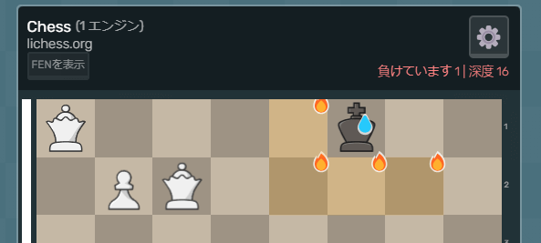
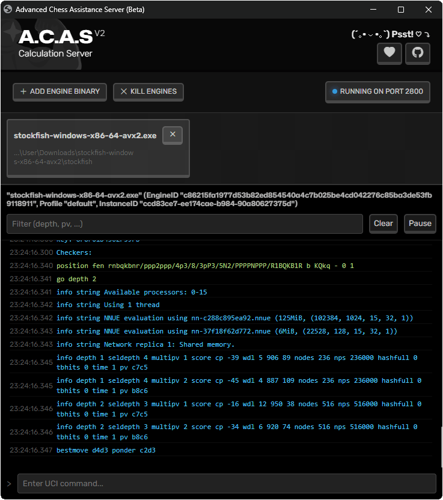
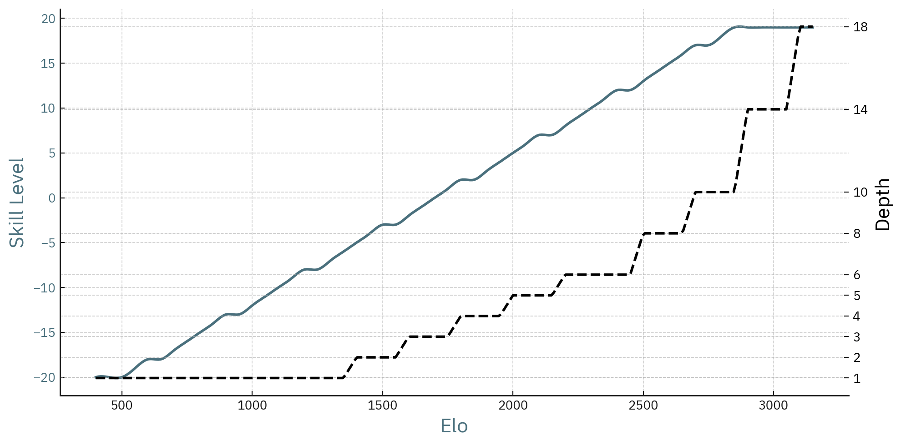
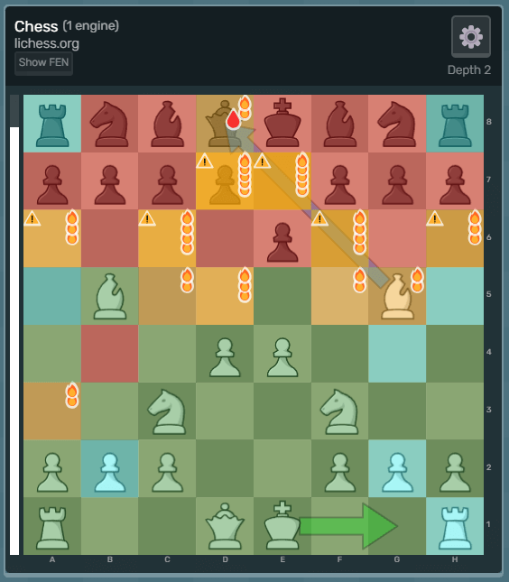

Usage 📖
Using A.C.A.S is easy! Once you have the userscript installed, just keep the GUI open while you're playing on a chess site. By default, the moves it suggests will show up directly on the board you're playing on.
Press Ctrl+D (Cmd+D for Mac) to bookmark this page.
♟️ Supported Chess Sites
- Battletested (Should work flawlessly)
- Stable (Works fine, but might have some minor bugs)
- Uncertain (Might work fine, be buggy, or not work at all)
⚠️ This list might be outdated. Check out the supported sites by clicking on the see all supported sites button.
🌐 Languages

You can change the language using the flag dropdown found on the top right on the GUI.
♟️ Board Controls
Use the + and - buttons on the GUI to resize its boards. Show FEN reveals the current position as text, while Show PGN reveals the recorded moves. PGN comes from the positions A.C.A.S recorded, so keep it connected from the start if you want the whole game.
🔥 Running External Engines (Beta)
Using external engines might be more unstable or even a bit slower than running a browser WASM engine. It depends on your computing power and the chess engine you're using.
This feature is in beta so please expect bugs and report them. Not every local engine has been tested so some might work worse than others. The server has currently only been built for Windows. Linux might be supported in the future, the server is built with Electron which is portable to many operating systems.

Getting started with the server
- (Or compile it yourself, then open it)
Click "Add Engine Binary" button to add your chess engine.
(Windows users should look for .exe)Enable the External Chess Engine on the GUI.
(Otherwise A.C.A.S will use a built-in engine)You will see your engines as list on the GUI. Click to select the engine you want to use.
(Remember to add engines using step 2 to be able to see them)
If the server is running but the GUI won't connect, check Server Port in Engine Settings. It must match the port shown in the Calculation Server. The GUI starts with 2800; only change it if your server uses another port.
Meaning of the connection status circle
- 🔴 Something is wrong, the server could not start or crashed.
- 🟢 The server is up, but not connected.
- 🔵 Connected to the client (GUI).
Risks of hosting a server
A.C.A.S supports engines running locally on your machine. It does this by hosting a WebSocket server on localhost. Please understand that running a server is never totally risk-free. While the server is being developed with your safety in mind, it might have vulnerabilities. Never expose the server to the public internet. Thank you for your understanding.
One more thing to keep in mind is that any website you visit might try to connect to the server. The server obviously blocks attempts from unknown domains (cuts off the connection without further notice) and alerts you about them. It's possible to detect that, but it would be weak evidence and most modern browsers limit making requests to localhost, so don't allow every site to make requests to your localhost, only this one.
Having issues with the external server?
Keep the Calculation Server running on the same computer as the GUI. If your browser asks to connect to apps on your device or your local network, allow it for the A.C.A.S GUI. Permission names vary by browser and version.
- Google Chrome / Edge
- Click the icon beside the address → Site settings.
- Allow access to apps on this device or the local network if listed, then reload the GUI.
- Mozilla Firefox
- In Firefox Settings, find Permissions.
- Check Device apps and services and Local network devices if listed. Allow the GUI's site, then reload it.
⚙️ Settings
There's quite a lot here, but you don't need to change everything. The defaults are fine to start with. Setting names below link to the GUI. If a setting is inside a panel, you may still need to open it using the nearby ⚙️ button.
- Board Controls, Settings Backups and Activity Log
- Profiles and Dynamic Settings
- Floating Panel, Chess Engine and Fusion
- Move Suggestions, Move Timing and Opening Book
- Learning Mode, Feedback and Move Detail
- Turn Settings, Moves On Demand and Render Settings
- Spoken Moves, Messages and Ghost Script
- Appearance and Concealment & Restart Triggers
⚙️ Import, Export & Reset
The buttons above the settings let you save your setup or start over:
- 💾 Export Settings saves a
config.jsonfile with your global settings and profiles. Per-board settings, opening book files and custom background images aren't included. - 📂 Import Settings loads a saved config and reloads the GUI. It replaces your current config rather than adding to it, so export a backup first.
- 🗑️ Reset Settings returns settings to their defaults after confirmation. It also removes your added profiles, imported opening books and custom background image.
Keep your config private if you've saved a Discord webhook in it. Opening books and background images need importing separately on another browser or device.
⚙️ Activity Log
Click 📜 above the settings to open the Activity Log. Logging is off by default; use its power button to turn it on before reproducing an issue. It records engine messages, setting changes, warnings and errors.
Use the filters and search to find relevant entries, then the copy button to copy the visible results when reporting a bug. History is saved in this browser, with only the latest 2000 entries kept. Check it for private information before sharing.
⚙️ Profiles
A profile is a separate set of engine settings. Use the + button next to the profile tabs to add one. For example, you could have a Stockfish profile and a Maia profile to compare their suggestions.
Selecting a profile only changes which settings you're editing. Other enabled profiles keep running! Turn off the Enabled setting in profiles you don't need, especially if your device is struggling.
Global settings apply across your boards. When instance selection is available, you can instead change settings for just one board. An "instance" is simply a board A.C.A.S has connected to. Some settings, such as the Floating Panel, are shared and don't belong to a particular profile.
⚙️ Floating Panel
The Floating Panel setting creates a small "Picture-in-Picture" view you can resize to be even smaller that will stay on top of every window. It contains important information about the current match.
This setting is very important to know because it helps keep A.C.A.S active when you're not viewing its tab. If suggestions freeze when you switch tabs, keep the panel open.
Disabling the floating panel uses a silent audio loop to try to keep A.C.A.S active instead. This may help in browsers such as Chrome, but isn't guaranteed. Please keep in mind that you need to interact with the A.C.A.S GUI every time you open it, so that the browser allows audio to start.
If you don't want to use the floating panel, you can also keep two browser windows next to each other so that A.C.A.S stays visible, even if just a little bit. This can help prevent the browser from putting the tab to sleep.
Click the settings button next to Floating Panel to find these:
- Display Board shows the board instead of just text, including in Learning Mode.
- Share Board combines move overlays from profiles on one board. Enable Display Board and Share Board for every profile you want to combine. Profiles must show the same position and orientation; animated Learning Mode boards remain separate. Each profile keeps its own status, evaluation and feedback.
- Display Evaluation shows the evaluation bar and score in every Floating Panel mode, independently of Display Board.
- PiP Quality changes the picture resolution, not the engine's strength. Lower it if the panel is slow or your tablet gets warm. The default is 70%; existing saved values are kept.
- SAN Move Notation uses familiar notation such as Nf3 instead of square-to-square notation such as g1f3. This also applies to Move TTS.
⚙️ Chess Engine
The Chess Engine setting changes the engine used to calculate moves. Maia 3 is the default. For strong analysis, choose Stockfish. The Lite versions are smaller downloads, which can be useful on a phone or tablet. If you want to play chess variants, use Fairy Stockfish 14.
- Stockfish, including Stockfish 19 (Strong engine analysis)
- Fairy Stockfish 14 (Chess variants)
- Maia 3 and Maia 2 (Suggestions based on human play at different ratings)
- Fusion (Stockfish 18 Lite Single analysis with a mandatory Maia 3 human-move policy and configurable styles)
- Lc0 with Maia (Semi-realistic human-like gameplay)
- Lozza 9 (Quite strong engine-like gameplay)
- External engine (An engine you run through the Calculation Server)
A.C.A.S takes information from the engine's results to give you insights into the match. Some engines offer less of extra information which cannot then be analyzed. Use Stockfish for best results.
None of these engines will play like a human for you. Do not think you can get away playing 2500 ELO matches as a 1000 ELO player with an engine. We do not want to hear any complaining on why you got banned when you broke our ToS.
⚙️ Chess Variant
Most users do not play chess variants, you most likely do not need to change this nor the Chess 960. If you happen to play a variant, A.C.A.S should automatically detect the chess variant you're playing if its supported.
The Chess Variant setting changes the type of chess Fairy Stockfish plays. Other engines don’t really support it, but most do support Chess 960, which is a variant of chess in which the piece starting positions are randomized. If you happen to play variants, you need to use Fairy Stockfish Chess Engine.
⚙️ Engine Elo
The Engine Elo setting controls how strong the engine plays (between 600-3200 ELO). Treat it as a rough strength setting, not a promise that it plays exactly like someone with that rating. Making Stockfish play at low ELO might result in weird behaviour. Maia is better suited for suggestions based on lower-rated human play.
Standalone Maia 3 uses 600–2600 Elo in A.C.A.S, while Maia 2 uses 1100–2000. The shared inputs allow 600–3200; when either saved rating is outside a standalone Maia engine's range, A.C.A.S warns and limits the applied value without changing your saved choice. Fusion accepts 600–3200 for both rating inputs, but values above 2600 are uncalibrated model assumptions, not a measured playing-strength claim. For Stockfish-style engines, setting 3200 removes the usual strength and depth limits. Max Movetime can still stop the search.

⚙️ Opponent Elo
The Opponent Elo setting tells Maia what rating to assume for the other player. Maia uses both ratings when choosing its suggestions. It doesn't change the actual opponent or read their rating automatically. If you're unsure, leaving it the same as Engine Elo is fine.
This shared field allows 600–3200, including with Fusion. Standalone Maia 3 still applies its 600–2600 app range, and Maia 2 applies 1100–2000, with a warning when either rating needs limiting. With Advanced Elo enabled, the regular Engine Elo and Opponent Elo fields are disabled and blurred; use the engine's advanced rating options instead.
⚙️ Advanced Elo
The above chart shows how A.C.A.S adjusts depth and skill level for the basic Engine Elo setting. It doesn't describe how Maia's rating inputs work. If you want to set the limits yourself, click the settings button next to Engine Elo and enable Advanced Elo. Just opening the panel doesn't enable it.
- Depth controls how far the engine searches. A larger number generally takes longer. It isn't a number of complete turns, and the engine doesn't examine every possible line equally.
- Search Nodes limits how much search work the engine does. A positive node limit is used instead of the depth limit. In Advanced Elo, 0 means use depth instead.
Other options come directly from your engine and appear once it starts. Open a chess board if the list is empty. Advanced Elo overrides the basic Elo controls, so disable it again if you want the normal Engine Elo setting to take over.
Note that not every "Advanced Elo" setting does something. For example "Ponder" option won't most likely do anything as it's not implemented to A.C.A.S. If you're running a built-in engine, it's limited by your browser and might not be able to take usage of any more cores, memory, external files and so on. The setting is meant for advanced users who know what they are doing.
Feel free to play around and try different things. If you notice something is not working, please understand that the dynamic nature of these settings causes bugs and not everything can be tested beforehand. If you're using a custom engine and encounter them, please feel free to report them to GitHub.
⚙️ Fusion Engine
Fusion combines Maia 3 move predictions with Stockfish 18 Lite Single analysis. Personality settings adjust move preferences without changing Stockfish's evaluations.
Select Fusion under Chess Engine. For extra controls, enable Advanced Elo and open a chess board. Only standard chess is supported.
If no combined suggestion passes the filters, Fusion falls back to Maia with your personality and Personal Variation. This bypasses Stockfish's quality penalties and Tactical Safety, so the move may be weaker. Fusion never switches to Stockfish-only suggestions.
A suggestion still requires a valid Maia prediction for an allowed legal move. Loading errors, timeouts or stopping before Maia responds can leave you without a suggestion. Maia Wait limits extra waiting after Stockfish finishes, subject to the search's time limit.
Main settings
- Stockfish Weight: Higher values favor stronger evaluated moves. At 0, only Maia and style preferences guide selection.
- Human Plausibility: Higher values exclude more moves Maia considers unlikely.
- Maia Temperature: Lower values emphasize Maia's favorites; higher values spread preferences more evenly.
- Personality and Personality Strength: Choose a style and how strongly its bonuses apply.
- Personal Variation: Adds consistent individual preferences using a saved identity. Random Seed can override that identity.
- Randomness and Top P: Allow alternative choices and limit their selection pool. Randomness 0 keeps ranking deterministic.
- Tactical Safety and Max Centipawn Loss: Filter combined suggestions by evaluation loss. They do not protect Maia fallback moves.
- Candidate Moves and MultiPV: Control how many alternatives Stockfish examines and how many suggestions Fusion returns.
Ratings and depth
In Advanced Elo, UCI_Elo and Enemy_Elo set Maia's rating assumptions from 600 to 3200. Values above 2600 are uncalibrated. Depth and Search Nodes control Stockfish, not Maia. A high Elo input cannot fix a shallow search.
Learning Mode disables random sampling and uses Stockfish's evaluation for grading, while keeping Maia and personality preferences.
Fusion does not guarantee a particular playing strength or human-like play. Follow the chess platform's rules and our Terms of Service.
⚙️ Weights
The Lc0 Weights setting determines how the Lc0 engine plays. The weight controls the engine's playing style, influencing the decisions it makes while playing. Maia weights have the ELO they're roughly playing at marked on them. The ELO and playing style of other weights is not known, but most of them are quite weak.
The Maia weights for Lc0 are intended for a single-node search. It's fine that the engine barely searches ahead; increasing Search Nodes changes how those suggestions are chosen. These weights are separate from the built-in Maia 2 and Maia 3 engines.
⚙️ Move Suggestions & Only Top Moves
The Move Suggestions setting controls how many candidate moves the engine tries to provide. For example, 3 asks for up to three different moves, not the next three moves of one line. Some engines may provide fewer. More suggestions can mean more work for the engine.
Only Top Moves mainly changes when suggestions appear. When enabled, A.C.A.S normally waits until the search finishes instead of showing suggestions that keep changing as the engine thinks. It doesn't force Move Suggestions down to 1. Searches without a normal stopping limit can still show updates while thinking.
If you want just one arrow, set Move Suggestions to 1. Setting it to 0 hides the engine's move suggestions, but doesn't turn off the engine.
⚙️ Move Delay & Max Movetime
These sound similar, but do different things. Both use milliseconds: 1000ms is 1 second.
- Move Delay holds back the suggestions until at least this much time has passed since calculation started. It doesn't give the engine more thinking time. If the search takes longer than the delay, you'll still have to wait for its results.
- Max Movetime stops the engine's search after roughly this much time. The engine can finish earlier if it reaches its depth or node limit. 0 means no extra time limit, not instant results.
For example, with Max Movetime at 1000 and Move Delay at 3000, the engine can stop thinking after about a second, but the suggestions won't appear until about three seconds after it started.
You can also make Max Movetime follow the opponent's latest observed thinking time instead of choosing one fixed value. See Opponent Move Time under Dynamic Settings for the graph setup and its limitations.
⚙️ Opening Book
The Opening Book setting loads saved moves from a file. Click the filename box to choose a Polyglot .bin or move-annotated .epd book. These moves are shown separately from the engine's suggestions, with white arrows by default. The engine keeps calculating normally.
A book only has moves for positions stored in it. If nothing shows up, your position might simply not be in the book. Move Suggestions also limits how many book moves are shown. You can change their color and opacity in Accessibility Settings, or use the × button next to the filename to remove the book from that profile.
Not every .epd file is an opening book. It needs move annotations such as bm, pm or pv. A list of starting positions alone doesn't tell A.C.A.S which moves to show. Books are stored in this browser, so you may need to import them again on another device.
⚙️ Learning Mode
The Learning Mode setting is for reviewing a move after you've played it, rather than being told what to play next. The GUI shows the position before your last move, along with that profile's engine suggestions and a rating of the move you actually played. The board being a move behind is intentional!
Learning Mode uses the engine selected in that profile, with its Elo and search settings. A Maia review can therefore differ from a Stockfish review. This is different from ordinary Move Ratings, which use a separate Fairy Stockfish engine. Keep A.C.A.S connected while playing; it needs the recorded positions to review your move.
Learning Mode may not work well with Maia 2 or 3. A.C.A.S evaluates their suggested positions and keeps the player/opponent Elo roles aligned, but their ratings remain approximate outcome estimates rather than deep tactical analysis. Use Stockfish for more reliable move reviews.
Live move arrows and opening book hints from a learning profile aren't sent to the chess site's board. Move TTS reads the move's rating instead of announcing the next suggested move. Learning profiles also ignore Moves On Demand, Only Own Turn and Always My Turn so they can record both sides of the position correctly.
⚙️ Display Board & Evaluation
The Display Board checkbox in Floating Panel settings controls the board in both normal and Learning Mode. Turn it off for a compact learning panel with the opening beside A.C.A.S in the header, rating counts and move feedback. Display Evaluation independently controls the evaluation bar and score in every mode. The GUI's main board and move review still work normally.
Hiding the board pauses its floating-panel animation and disables the animation controls without clearing your saved choices. Showing it again allows animation to resume when an eligible review is available. It doesn't close the Floating Panel or change its keep-alive purpose. When the last instance closes, the panel keeps its dimensions instead of widening.
⚙️ Animate Best Line
Enable Animate Best Line to replay the engine's preferred continuation in the Floating Panel when it found a different move from yours. A "line" is a sequence of moves and replies. Display Board must be enabled to see the animation.
Stop After Enemy Move stops that replay when the opponent plays their actual reply. Disable it if you'd rather keep watching the review until your next move.
Learning Mode belongs to a profile. It doesn't disable other profiles that are still giving live suggestions. If you only want reviews, turn off those other engines.
⚙️ Move Ratings & Feedback
Move Ratings compares your played move with the best move found by a separate Fairy Stockfish engine. Opponent Ratings does the same for the other player. These are reviews of moves already played, not predictions of the next move.
The Search Depth in Feedback Settings controls this separate engine, not your main engine. Higher depth can give it a better look at the position, but takes longer and uses more of your device's processing power. In Learning Mode, the selected profile's engine supplies the review instead.
Ratings consider how much worse the played move is than the engine's best choice, including changes in evaluation and forced mates. A.C.A.S isn't using the chess site's own rating system, so don't expect the labels to match exactly. Shallow analysis can also miss things.
- Feedback On External Site puts the rating on the chess site's board. This is separate from Moves On External Site and Render On External Site.
- Feedback Emojis controls the rating emojis beside moves. Turning them off doesn't stop the review itself.
- Feedback In Floating Panel puts a compact version of the feedback in the panel.
- Move Counts In Floating Panel adds totals for the different move ratings outside Learning Mode. Enable the ratings you want counted and Feedback In Floating Panel too.
Engine critiques are comparisons to the engine's idea of the best move, not a judgement of you as a player. Use them to find something worth reviewing, not to worry about every small inaccuracy.
⚙️ Move Detail & Filter Shown Pieces
The Move Detail setting lets you ask for less help. Instead of showing the whole move, A.C.A.S can leave part of it for you to figure out:
- Full move shows where the piece starts and where it should go.
- Piece only shows which piece to consider, but not where to move it.
- Destination only shows the target square, but not which piece should move there.
- Captures only or Non-captures only hides suggestions of the other kind. You can combine these with piece-only or destination-only hints.
Filter Shown Pieces lets you hide suggestions for particular piece types. It has separate lists for your pieces and opponent pieces. For example, you can hide your queen moves while leaving knight suggestions visible.
Move Detail applies to your move hints. Opponent move guesses have their own piece filters and can still show a full reply, so turn those off too if you don't want that information.
These settings filter the suggestions the engine already found. They don't force it to find a different move with an allowed piece. If all its suggestions are filtered out, you might see no hint at all. Moves On Demand uses full move detail outside Learning Mode.
⚙️ Moves On Demand
The Moves On Demand setting waits for you to interact with a piece on the chess site's board. Click or tap a piece to ask the engine about moves with that piece, rather than getting suggestions for the whole board automatically.
It's useful when you want to choose the piece yourself. Refresh the chess site after changing this setting if it doesn't respond. Ghost Script disables the board overlay this feature needs, so the two don't work together.
⚙️ Only Own Turn, Always My Turn & Reverse Side
These change which side the main engine calculates for. They're easy to mix up:
- Only Own Turn skips normal suggestion searches while it's the opponent's turn. It doesn't turn off separate feedback analysis.
- Always My Turn asks the engine to treat the current board as if you could move next, even while the opponent is thinking. Those suggestions are hypothetical: their actual reply can change everything. Disable it to analyze the side whose turn it really is.
- Reverse Side switches the profile's side to the opponent. With Always My Turn, you can use it to look for their best moves instead of yours. It doesn't just rotate the board.
⚙️ Dynamic Settings
Dynamic Settings lets a setting change as the game changes. Click the small curve button beside a supported setting to open its graph. This is optional; if you want one value for the whole game, just use the normal setting.
The horizontal axis (X) is what you're watching, and the vertical axis (Y) is the setting's value:
- Piece Count counts pieces and pawns from both sides, including kings. Ordinary chess starts at 32.
- Move Number is the full move number. White and Black each playing once advances it by one.
- Evaluation is your advantage from the latest completed primary engine evaluation. Negative means you're losing, positive means you're winning, and 0 is equal. It's measured in centipawns, so +100 means roughly a one-pawn advantage, not necessarily an extra pawn on the board.
- Opponent Move Time (ms) is the duration of the opponent's latest fully observed turn. Use it to adapt a setting to their pace.
- Material Balance (cp) is your remaining material minus theirs, using fixed piece values. It updates from the board without waiting for engine analysis.
Choose a variable, choose a setting, then use ＋ Line for the profile you're editing. Drag the points or select one and type its X and Y values. Use ＋ Point to add another. Changes are saved as you edit.
For example, choose Move Number and Engine Elo. Put one point at X 1, Y 1200 and another at X 40, Y 1800. With a Linear curve, the Elo gradually rises from 1200 to 1800 over those moves. After move 40, it returns to your normal saved Elo unless you extend the line.
- Step holds a value until the next point.
- Linear changes evenly between points.
- Smooth follows a curved transition between points.
Checkboxes and dropdowns use Step because they need a definite choice, not an in-between value. For dropdowns, Saved default means use the value in the normal setting. Each setting has one curve per profile; you can't give it separate Piece Count and Move Number curves at the same time.
A graph doesn't bypass the setting's normal rules. For example, an Engine Elo curve won't take over while Advanced Elo is enabled. If you graph Chess Engine itself, it returns to your saved engine at the start of a new game.
The normal input keeps showing your saved value even while a graph is overriding it. Check the curve button's live value if the engine seems to be using something else. Outside the line's range, or while its variable isn't available yet, the saved value is used. Remove the line to go back to a fixed setting.
⚙️ Opponent Move Time (ms)
This measures the time between the userscript observing your move and observing the opponent's reply. It is not the chess site's clock time: network delays, board animations and delayed move detection can affect it. It uses the actual player's side, not a profile's Reverse Side setting.
To make Max Movetime match the latest sample, open its curve editor, choose Opponent Move Time, add a line for your profile and select Linear. Set the endpoints to X 1, Y 1 and X 100000, Y 100000. For example, an observed reply taking 2400ms sets Max Movetime to 2400ms. This changes the search budget, not the time at which an automatic move is played; depth or node limits can still end the search earlier.
The value changes after a complete observed opponent turn, not continuously while they think, and stays at the latest valid sample between replies. Loading mid-turn doesn't provide a complete sample. Reconstructed missed moves aren't timing samples, and a new game clears the value. Until a sample is available, or if it falls outside your curve's range, the normal saved setting is used. The example covers 1ms to 100 seconds; it doesn't bypass Max Movetime's normal limits.
⚙️ Material Balance vs. Evaluation
Both use centipawns (cp), where 100 cp is one pawn unit, but they answer different questions:
- Material Balance: how much material do you have compared with the opponent? It adds pawn 100, knight 320, bishop 330, rook 500 and queen 900, then subtracts their total from yours. Kings contribute 0. Positive means extra material, negative means less material, and 0 means equal total value.
- Evaluation / Your Advantage: how good does the engine think your position is? It considers the position, including threats, king safety, piece activity and material, rather than just adding up pieces. It depends on the engine and analysis available.
For example, after sacrificing a rook for a winning attack, your Material Balance could be −500 cp while Evaluation is +800 cp. You're down material but the engine thinks you're winning. Material Balance is therefore not another win/loss estimate.
Use Evaluation when you want settings to follow the engine's overall assessment. Use Material Balance for predictable, engine-independent rules, such as giving more hints when down a piece. Unlike Piece Count, it distinguishes losing a queen from losing a pawn. The calculation uses standard pieces on an 8×8 board and doesn't provide variant-specific piece values.
⚙️ Moves On External Site
The Moves On External Site setting shows move hints directly on the board you're playing on, instead of only on the GUI's board.
This only controls move hints, including opening book hints. Board metrics and move ratings have their own switches: Render On External Site and Feedback On External Site. Turning off move arrows alone doesn't turn those off.
Adding things to a chess site's board could be detected. Hiding arrows doesn't make engine use safe or allowed. Please follow the site's rules and our ToS.
⚙️ Opponent Move Guess
The Opponent Move Guess setting shows the reply the engine expects after you play its suggested move. It's not necessarily the move the opponent should make on the board right now, and it isn't a promise of what they'll actually play.
Normally the reply appears when you hover over the square the suggested move starts from. Enable Constantly Visible to leave it showing, which is useful on touchscreens. Some engines don't provide a reply, so there may be nothing to show.
⚙️ Theme Color
Theme Color setting and the settings below it allow you to change the theme to your liking.
Chess Font changes the GUI's pieces, while Board Color changes its board colors. These don't change the chess site's own theme.
⚙️ Custom Background
Choose Custom Image under Bg Texture, then click the filename box to upload an image. PNG, JPEG, WebP, GIF and AVIF are supported, up to 10 MB. Use Image Blur to soften it or × to remove it. The image stays in this browser and isn't included in settings exports.
⚙️ Move Colors
🟩 Best Move, 🟦 Secondary Move, 🟥 Enemy Move
These are the default move colors, not the square colors explained below. Accessibility Settings has separate controls for move colors and opacity. Colored Squares replaces move arrows with highlighted squares if you find those easier to read.
⚙️ Move TTS & Spoken Announcements
Move TTS reads suggested moves aloud. TTS just means text-to-speech. Choose a voice and adjust the speed in the Audible settings. The available voices depend on your browser and device.
Announce Opponent Moves reads the move the opponent just played, not the engine's guess. Announce Advantage Changes tells you when the position shifts between states such as equal, winning or losing, rather than reading every small evaluation update. These have their own switches, so you can hear them without enabling spoken move suggestions.
Translate Audio uses your selected GUI language where translations are available. Choose a suitable voice for that language too. In Learning Mode, spoken feedback is limited to the move's rating rather than live suggestions or advantage commentary.
⚙️ Messages
The Messages panel can send engine results to a Discord channel through a webhook. Enter your Discord Webhook URL and turn on Enabled for the profile you want to send from. A message is sent when that profile finishes a search for the current position.
The Message Template is the text to send. Words in braces are replaced with engine data. For example, {profile}: {bestMove} (depth {depth}) includes the profile name, move and search depth. Available variables are listed below the template. Values an engine doesn't provide are left blank.
Include Board Photo attaches an image of the GUI's board. Unlike normal local analysis, this feature sends the chosen information to Discord. Keep your webhook URL private; someone with it can post messages through that webhook.
⚙️ Ghost Script
The Ghost Script setting prevents A.C.A.S from creating its board overlay on the chess site. That means no external move arrows, rendered metrics or feedback markings. Moves On Demand also needs that overlay, so it won't work with Ghost Script enabled. Refresh the chess site after changing this setting.
The GUI can still receive the board and calculate. If it no longer opens automatically, open it yourself and keep it running. Ghost Script isn't an "undetectable" mode and doesn't change the rules about using assistance.
⚙️ Concealment & Restart Triggers
The Concealment Trigger temporarily hides assistance such as arrows and feedback, including in the Floating Panel, and stops current speech. Use the trigger again to show assistance. It doesn't stop engine calculations or unload the userscript.
Auto Conceal hides assistance again after the chosen time whenever you reveal it. For example, 3000 means you get about three seconds to look. 0 disables the automatic timer.
The Restart Trigger restarts connected instances if they get stuck. It doesn't reset your saved settings. Both triggers can use a key or one of the listed mouse gestures, so check them if assistance keeps disappearing or restarting unexpectedly.
⚙️ Render Settings
The rendering settings display information about the position, rather than telling you a move to play. Square vision and capture warnings don't use a chess engine. Show Piece Contributions does use a separate engine, so it can take longer. These features can be useful for learning, but they're not a replacement for checking a line yourself.

Rendering settings are configured separately for each profile and shown on the GUI's board. Enable Render On External Site for that profile if you want them on the chess site's board too. This switch doesn't enable any particular metric by itself; choose the ones you want below it.
⚙️ Colors
Own Piece Vision uses Green for squares your pieces see. Enemy Piece Vision uses Red for squares the enemy's pieces see. With the square categories enabled together, green and red show squares only that side sees. If you enable just one side's vision, it includes contested squares too.
Orange means the square is contested: at least one piece from each side sees it. Aqua means neither side sees the square.
You can often change the board colors on chess sites. If the highlights are hard to see, try a less colorful board.
⚙️ Use Centered Dots
The Use Centered Dots setting replaces full square highlights with small colored dots. It doesn't change what the colors mean. Orange dots replace the contested square's fire emojis and counts; a red outline means more enemy pieces see that square than yours.
Unwatched Squares are cyan because neither side sees them. "Unwatched" doesn't mean a piece is guaranteed to be safe there after moving. Moving it can open up a line or change what the enemy attacks.
⚙️ Contested Squares
The Contested Squares setting displays contested squares with the color orange. Fire emojis 🔥 indicate contested squares too. One fire emoji means 2 or 3 pieces from both sides see that square in total. Two stacked fire emojis mean 4 or 5 pieces, three mean 6 or 7, and so on. These counts don't consider the value of those pieces.
The fire emoji can have text, for example, 🔥 with -2 text means that the square is defended by 2 less pieces than the enemy attacks it with (e.g. you have 1 piece defending the square, the enemy has 3 pieces attacking it, so 1 - 3 = -2). +2 means that you have 2 more pieces attacking the specific square than the enemy does (e.g. you attack a square with 4 pieces and the enemy defends it with only 2, so 4 - 2 = 2).
⚙️ Own Piece Capture
The Own Piece Capture setting puts 💧 on your pieces when the opponent could win material by capturing them. In ordinary chess, it checks captures and recaptures on that square, not just how many pieces attack or defend it. For example, a queen taking your protected rook might lose the queen in return, so that alone wouldn't mark your rook as vulnerable.
⚙️ Enemy Piece Capture
The Enemy Piece Capture setting does the same for enemy pieces, using 🩸 when you could gain material from a capture. Equal exchanges aren't marked just because a capture is available.
These warnings look at the exchange, not the whole game. They don't tell you whether taking the piece allows mate elsewhere, or whether a sacrifice is worth it. Chess variants use a rougher attack-and-defence estimate.
⚙️ Show Piece Contributions
The Show Piece Contributions setting puts an estimated contribution beside each piece. A.C.A.S uses Fairy Stockfish to compare the position with and without that piece. A larger positive number means the piece appears to be helping its own side more in that position.
The numbers use pawn units, but aren't fixed material values. A rook doesn't always get 5, and a pawn doesn't always get 1. The number includes how the position changes when the piece is removed, and can even be negative. Ordinary kings aren't given a contribution this way.
This is experimental and uses a shallow search for many modified positions. It can be slow, and odd numbers are possible. Leave it off if you'd rather save battery or keep the board less cluttered.
Didn't find what you were looking for? Perhaps the troubleshoot page can help?
Want to learn even more? Visit the blog page!